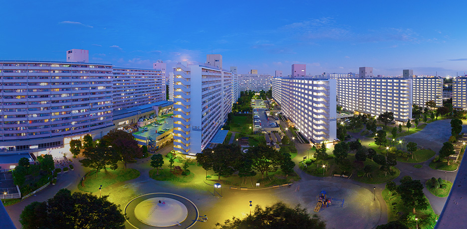

NEWS
- 2025.9.19
9月18日に「高島平カップ2025」の参加確認メールを送信いたしました。記載されている内容などに間違いがないかご確認ください。
メールが届いていない方は、迷惑メールフォルダを確認し受信設定（「takashimadaira-cup@runandbike.jp」のメールを受信可能にする）を行ったうえで、お手数をおかけしますが、お問い合わせ窓口までご連絡ください。
メールでお送りしている当日の参加案内(10.6MB)はこちらからもご確認いただけます。 - 2025.9.17
エントリーリスト、参加案内(10.6MB)をアップしました - 2025.9.8
高島平カップ2025
(第8回#平暮らしキャラバン すまいるキッズPARK★旧高七小)の2次エントリーをスタートしました。
9月10日(水)23:59まで
2次エントリーはこちら - 2025.7.10
高島平カップ2025
（第8回#平暮らしキャラバン すまいるキッズPARK★旧高七小）の詳細をアップしました。 - 2025.6.5
第7回 #平暮らしキャラバン すまいるキッズPARK★赤塚公園の詳細をアップしました。
詳細はこちら - 2025.5.1
令和7年6月14日(土)第7回 #平暮らしキャラバン すまいるキッズPARK★赤塚公園を開催します。
詳細は近日公開 - 2025.1.9
令和7年3月15日(土)第6回 #平暮らしキャラバン すまいるキッズPARK★旧高七小を開催します。
詳細はこちら - 2024.11.20
令和6年12月7日(土)第5回 #平暮らしキャラバン すまいるキッズPARK★高島平団地を開催します。
詳細はこちら - 2024.9.11
参加案内をアップしました。 - 2024.9.11
9月10日に「高島平カップ2024」の参加確認メールを送信いたしました。記載されている内容などに間違いがないかご確認ください。
メールが届いていない方は、迷惑メールフォルダを確認し受信設定（「takashimadaira-cup@runandbike.jp」のメールを受信可能にする）を行ったうえで、お手数をおかけしますが、お問い合わせ窓口までご連絡ください。 - 2024.9.4
高島平カップ2024の2次エントリーは9月5日(木)までになります。 2次エントリーはこちら - 2024.7.31
高島平カップ2024のエントリー期間を8月29日(木)まで延長しました。
エントリーはこちら - 2024.7.5
令和6年9月14日（土）に赤塚公園で高島平カップ2024を開催します。
開催概要はこちら - 2024.5.16
第2回高島平カップの開催が決定しました。
日程：令和6年9月14日（土）
詳細は近日公開 - 2024.5.7
令和6年6月8日(土)高島平ランニングバイクPARK in 高島平団地 団地であそぼう！
ストリートスポーツに挑戦〜presented by 高島平カップ〜
を開催します。 詳細はこちら - 2024.3.7
ブレイキンワークショップの定員を増枠いたしました。
詳細はこちら - 2024.2.14
令和6年3月16日(土)ランニングバイクPARK in 赤塚公園オリンピック新種目! ブレイキンワークショップ
〜 presented by 高島平カップ 〜を開催します。 詳細はこちら - 2023.11.29
令和5年12月16日（土）団地で遊ぼう！高島平ランニングバイクPARK ～ presented by 高島平カップ ～を開催します。 詳細はこちら - 2023.10.12
高島平カップのリザルトをアップしました。 - 2023.9.21
エントリーリスト、参加案内をアップしました。 - 2023.8.14
はじめて自転車教室・自転車スキルアップ教室のエントリーがスタートしました。
エントリーはこちら - 2023.8.14
自転車安全スキルアップ教室の申込期間が変更になりました。
8月14日（月）午前10時受付開始（先着順）。9月14日(木)締切 - 2023.7.27
はじめて自転車教室・自転車スキルアップ、高島平カップ お仕事体験の詳細ページをアップいたしました。
はじめて自転車教室・自転車スキルアップ
高島平カップ お仕事体験
- 2023.7.24
高島平カップのエントリーがスタートしました。
開催概要はこちら
エントリーはこちら - 2023.7.21
いつも高島平カップをご愛顧いただき誠にありがとうございます。
現在エントリー受付中のステージについて以下のご報告をいただいておりましたが現在は解消しております。
・一部のスマートフォンにおいて、JTBスポーツステーションエントリーページへのリンクがJTBスポーツステーション英語版トップページにリンクされる
このたびはご迷惑とお不便をおかけして大変申し訳ありませんでした。 - 2023.7.12
令和5年9月30日（土）に赤塚公園で高島平カップを開催します。 開催概要はこちら
※JKSA自転車教室とお仕事体験については後日アップ予定です
EVENT
イベント

高島平カップとは
25万平方メートルもの広さを持つ赤塚公園。高島平団地と首都高5号線に沿って広がる自然豊かな公園内には300mトラックや野球場、バーベキュー広場など様々な施設を有し、市民の憩いの場となっています。
そんな地元のみなさんに長く愛されてきた赤塚公園内で 初めてのランニングバイクレースを開催します。
12インチのランニングバイクであればブランドは問いません。レースに出るのが初めて、というお子さまのエントリーも大歓迎!
たくさんの子供たちにランニングバイクに乗る楽しさ、ドキドキやワクワクする気持ちを感じてもらうべく、高島平カップは開催されます。
赤塚公園で笑顔あふれる素敵な週末を。
ご家族みんなでぜひお越しください。